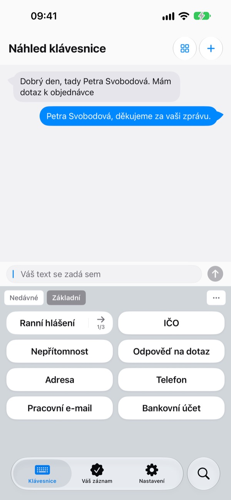
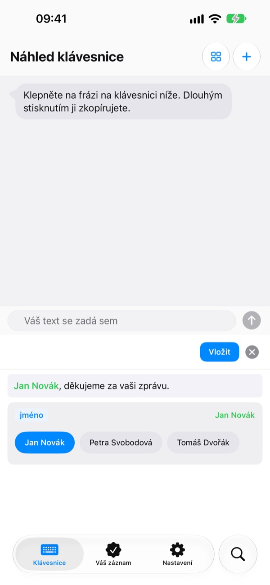
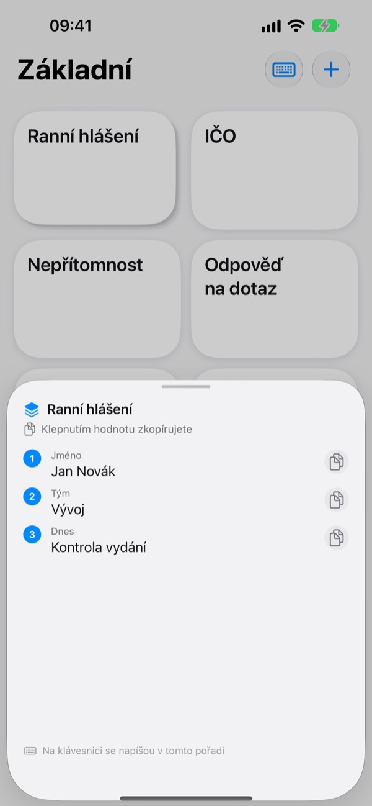
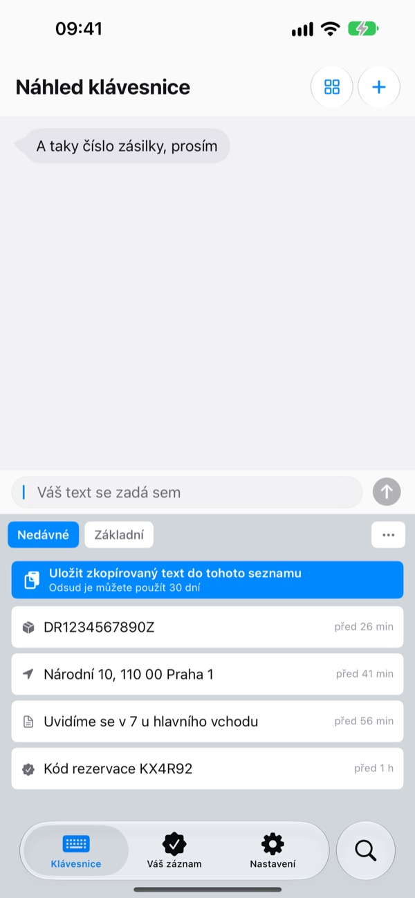
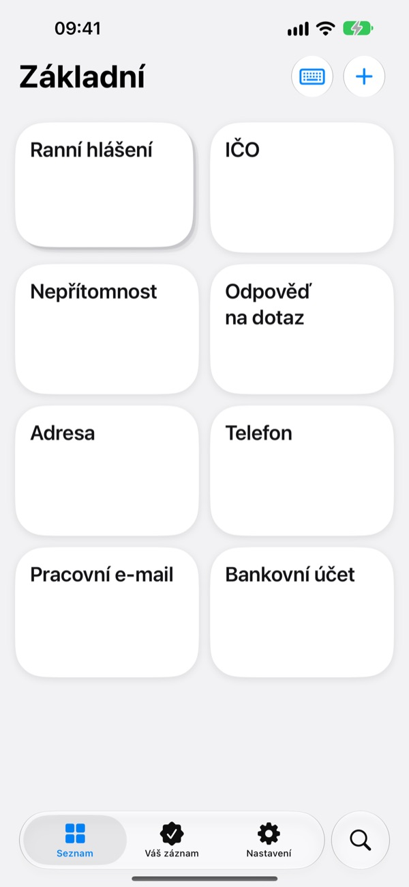

Nepište pořád
to samé dokola
Číslo účtu, adresu nebo oblíbený úvod e-mailu si uložte jednou. Ve Zprávách, Mailu, Safari a všude, kde píšete, je pak máte na klávesnici na jedno klepnutí.
Prvních 100 vložení máte všechny funkce zdarma.

Vyzkoušejte si to tady
Tohle je obrazovka Náhled klávesnice přímo z aplikace. Na iPhonu se tahle klávesnice objeví všude, kde se dá psát.
Kolikrát jste dnes psali číslo účtu?
Kamarád se ptá, kam vám má poslat svůj podíl, a vy otevíráte bankovní aplikaci a kopírujete číslo. Pak zase ručně vyťukáváte doručovací adresu a každému zákazníkovi píšete stejný pozdrav. ClipKeyboard má tyhle texty přímo na klávesnici, připravené na jedno klepnutí.
Vyplníte jen to, co se mění
Šablona nechá proměnlivé části, třeba {jméno} nebo {datum}, jako prázdná pole.
Při vložení se zeptá jen na ně a můžete vybrat hodnotu, kterou jste už použili.

Více hodnot, jedna po druhé
Zásobník uloží na jednu klávesu několik hodnot, například jméno, tým a dnešní úkol.
Klepnutím vložíte aktuální pozici, šipkou vedle přejdete na další.

Co zkopírujete, máte i na klávesnici
Číslo zásilky, adresa nebo telefon, které jste právě zkopírovali, se objeví na kartě Nedávné v klávesnici.
E-maily, telefonní čísla, adresy, čísla karet a IBAN rozpozná a roztřídí, takže je za vteřinu najdete znovu.

Citlivé údaje pod zámkem
Číslo pasu nebo karty uložte jako zabezpečenou frázi chráněnou Face ID.
Máte číslo účtu jen na papíře? Vyfoťte ho a přejeďte prstem jen přes znaky, které potřebujete.

Začnete ve třech krocích
- 1
Přidejte klávesnici
Nastavení > Obecné > Klávesnice > Klávesnice > Přidat novou klávesnici a vyberte ClipKeyboard.
- 2
Povolte úplný přístup
Klávesnice ho potřebuje, aby mohla číst fráze uložené v aplikaci. Co napíšete, nikdy neopustí vaše zařízení.
- 3
Přepínejte podržením glóbu
V libovolné aplikaci podržte na klávesnici 🌐, vyberte ClipKeyboard a klepněte na klávesu.
Co všechno můžete mít na klávesnici
- Fráze
- Vloží přesně to, co jste uložili, včetně zalomení řádků a emoji.
- Šablona
- Pole ve složených závorkách, třeba {jméno}, vyplníte při každém vložení.
- Zásobník
- Několik hodnot na jedné klávese. Šipka přejde na další pozici.
- Zabezpečená fráze
- Vloží se až po ověření přes Face ID nebo Touch ID. (Pro)
- Obrázková fráze
- Klepnutím zkopírujete obrázek a pak ho vložíte do zprávy.
- Historie schránky
- Uchová, co zkopírujete, roztříděné podle typu a připravené k dalšímu použití.
- Vložit text skenem
- Přejeďte prstem přes text na fotce a vezměte jen tu část. Fotka se neukládá.
Celý návod najdete na m1zz.github.io/ClipKeyboard/cs/tutorial.html.
Stokrát vyzkoušejte, pak se rozhodněte
Zdarma
- Všechny funkce, dokud frázi nevložíte stokrát
- Vše, co vytvoříte, potom dál funguje
- Nové položky: až 10 frází, 3 šablony, 3 zásobníky a 5 obrázků
- Historie schránky: 50 položek
Plus · Pro
- Plus: neomezeně frází, šablon, zásobníků a obrázků, historie schránky 100 položek
- Pro: vše z Plus a navíc záloha na iCloud, zámek Face ID a synchronizace mezi zařízeními (beta)
Obojí jako roční předplatné nebo jednorázový doživotní nákup.
Vaše fráze se nikdy nesmažou, ani když nezaplatíte nebo předplatné skončí. Žádné reklamy.
Časté otázky
Na klávesnici nevidím své fráze.
Nejspíš je vypnutý úplný přístup. Otevřete Nastavení > Obecné > Klávesnice > Klávesnice > ClipKeyboard a zapněte Povolit úplný přístup.
Můžu dál používat svou klávesnici?
Ano. Po vložení fráze se ClipKeyboard přepne zpět na klávesnici, kterou jste používali, a v nastavení to jde vypnout. Psát můžete i přímo v ClipKeyboard: má klávesy jako na iPhonu ve 23 jazycích.
Dá se psát japonsky nebo čínsky?
Japonsky zatím jen v kaně, čínsky v pinyinu a zhuyinu. Převod na znaky kanji a hanzi ještě chybí.
Co zkopíruji, se v historii neobjeví.
iOS nedovolí ostatním aplikacím číst schránku samy od sebe. Jednou otevřete aplikaci, pak použijte klávesnici a položky se objeví.
Jak smažu hodnoty uložené k šabloně?
V editoru šablony klepněte na pole a uvidíte jeho uložené hodnoty. Přejetím prstem hodnotu smažete.
Co se stane po 100 vloženích?
Všechny fráze, šablony a zásobníky, které jste vytvořili, dál fungují. Bezplatné limity platí jen pro nové položky. Chcete-li je zrušit, zvolte Plus nebo Pro.
Posílají se mé fráze někam?
Ne. Jsou uložené v tomto zařízení a jejich obsah neshromažďujeme. Se zapnutou zálohou na iCloud se ukládají šifrovaně do vašeho vlastního iCloudu. Pro vylepšování aplikace sbíráme jen anonymní statistiky používání a nepoužíváme analytické nástroje třetích stran.
A když si pořídím nový telefon?
Se zapnutou zálohou na iCloud z Pro obnovíte vše na novém zařízení se stejným Apple účtem. Přenesou se i obrázkové fráze. Obnovení nahradí fráze, které už na tom zařízení jsou.
Funguje i na iPadu?
Ano, na iPhonu i na iPadu.
Můj problém tu není.
Napište nám e-mail níže a popište, co se stalo. Obvykle odpovídáme do druhého dne.
Dotazy nebo připomínky? Pište na leeo@kakao.com.